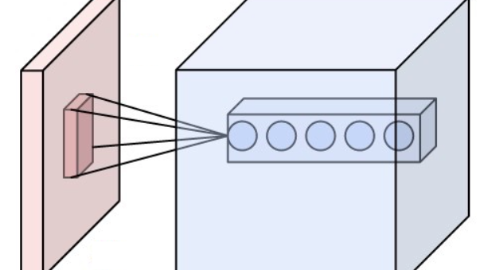
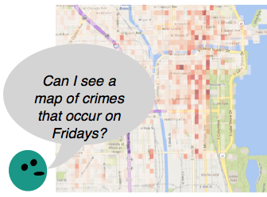
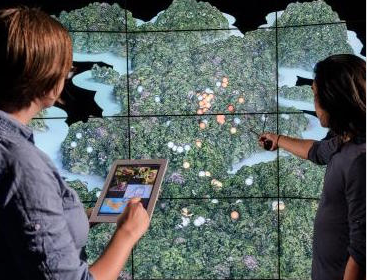
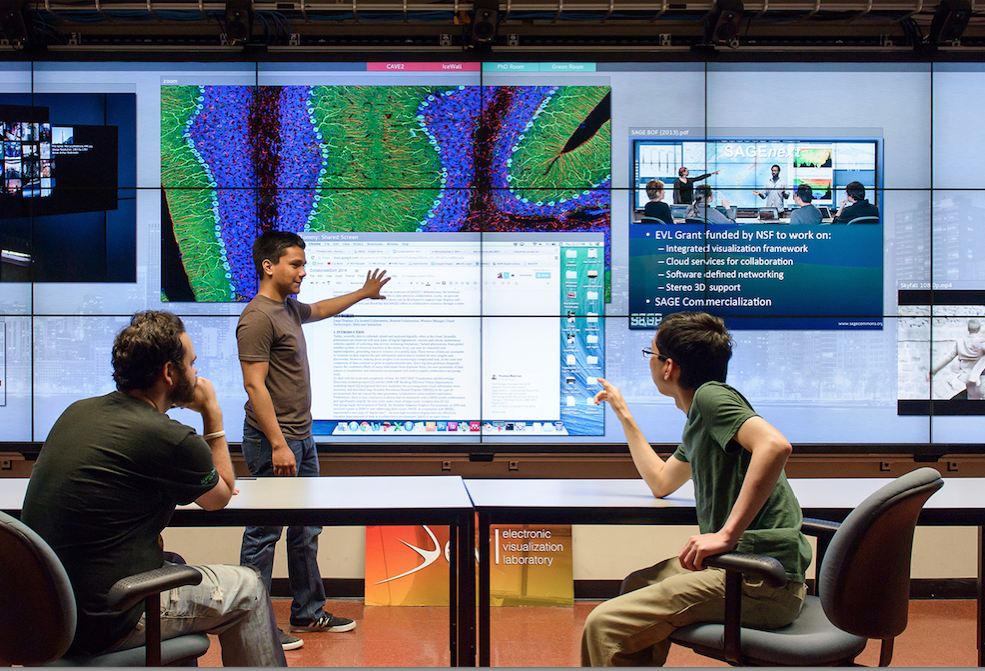
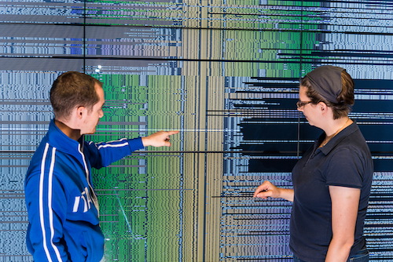
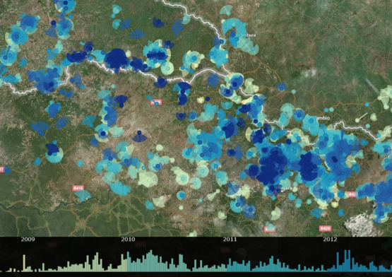

Research projects

Visualizing deep learning for cancer biology research
New research project to explore visualization approaches that can help domain scientists understand the process and products of deep learning methods on cancer biology data, and help machine learning researchers tune and refine these methods.
New research project to explore visualization approaches that can help domain scientists understand the process and products of deep learning methods on cancer biology data, and help machine learning researchers tune and refine these methods.

Articulate: Designing conversational interfaces for visual data analysis
Exploring design challenges of developing a conversational interface for visual data exploration and prototyping an application to take spoken inputs and generate visualization responses.
Exploring design challenges of developing a conversational interface for visual data exploration and prototyping an application to take spoken inputs and generate visualization responses.

Sensei-Panama: visualizing animal behavior and environmental 'big data' in immersive environments
Collaborative project with animal behavior and computational ecology researchers to visualize tracked animal movement data across the Isla Barro Colorado island by recreating island ground and canopy topology from sensor data. Project performed primarily by mentoring undergraduate students.
Collaborative project with animal behavior and computational ecology researchers to visualize tracked animal movement data across the Isla Barro Colorado island by recreating island ground and canopy topology from sensor data. Project performed primarily by mentoring undergraduate students.

Sage2: Enabling remote and co-located data-intensive collaboration on large, high-resolution displays.
Developing a web-based platform for remote and co-located collaborative work on large display environments. Sage2 displays high-resolution heterogeneous content (images, pdfs, videos, webpages) on a shared display space, along with native apps that leverage web-based APIs.
Developing a web-based platform for remote and co-located collaborative work on large display environments. Sage2 displays high-resolution heterogeneous content (images, pdfs, videos, webpages) on a shared display space, along with native apps that leverage web-based APIs.

BactoGeNIE
Developing visually scalable approaches to visualize hundreds of gene neighborhoods from complete bacterial genome sequences on large, high-resolution displays.
Developing visually scalable approaches to visualize hundreds of gene neighborhoods from complete bacterial genome sequences on large, high-resolution displays.

Visualizing spatio-temporal incident reports
Visualization of Lord's Resistance Army incident reports in central african countries collected by a crowd-source non-profit reporting service. Development of encodings to enable predictive analytic tasks and enable analysts to see spatial and temporal patterns.
Visualization of Lord's Resistance Army incident reports in central african countries collected by a crowd-source non-profit reporting service. Development of encodings to enable predictive analytic tasks and enable analysts to see spatial and temporal patterns.